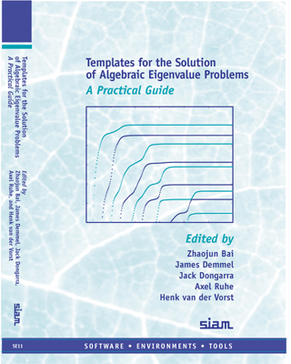

下一节
上一级
上一节
目录
索引
下一节：
贡献者名单
Templates for the Solution of Algebraic Eigenvalue Problems:
a Practical Guide

Edited by
Zhaojun Bai, James Demmel, Jack Dongarra, Axel Ruhe, and Henk van der Vorst
贡献者名单
如何使用本书
如何引用此书
致谢
目录
符号和缩略语列表
符号
缩略词
直接算法清单
图片清单
表格清单
引言
为什么是特征值模板？
目标读者群
使用决策树选择模板
什么是模板？
书籍的组织结构
特征问题简述
引言
数值稳定性和条件数
厄米特征问题
J. Demmel
特征值与特征向量
不变子空间
等价关系（相似性）
特征分解
条件数
特征问题的具体化
相关的特征问题
示例
广义厄米特征问题
J. Demmel
特征值与特征向量
特征空间
等价关系（合同关系）
特征分解
条件数
特征问题的具体化
相关的特征问题
示例
奇异值分解
J. Demmel
奇异值与奇异向量
奇异子空间
等价关系
分解
条件数
奇异值问题的具体化
相关的奇异值问题
示例
非厄米特征问题
J. Demmel
特征值与特征向量
不变子空间
等价关系（相似性）
特征分解
条件数
特征问题的具体化
相关的特征问题
示例
广义非厄米特征问题
J. Demmel
特征值与特征向量
收缩子空间
等价关系
特征分解
条件数
特征问题的具体化
相关的特征问题
示例
奇异情况
更多的广义特征问题
非线性特征问题
J. Demmel
迭代投影方法简介
引言
基本概念
Y. Saad
谱变换
R. Lehoucq 和 D. Sorensen
厄米特征值问题
引言
直接方法
单向量与多向量迭代
M. Gu
幂法
逆迭代法
瑞利商迭代法
子空间迭代法
可用的软件
Lanczos方法
A. Ruhe
算法
收敛性质
谱变换
重新正交化
可用的软件
数值示例
隐式重启Lanczos方法
R. Lehoucq 和 D. Sorensen
隐式重启
位移的选择
GEMV形式的Lanczos方法
收敛性质
计算成本与权衡
收缩与停止规则
正交收缩变换
锁和清洗的实施
可用的软件
带状Lanczos方法
R. Freund
收缩的必要性
基本性质
算法
变体
Jacobi-Davidson方法
G. Sleijpen 和 H. van der Vorst
基本理论
基本算法
重启与收缩
计算内部特征值
可用的软件
数值示例
稳定性与准确性评估
Z. Bai and R. Li
广义厄米特征值问题
引言
转换为标准问题
直接方法
单向量与多向量迭代
M. Gu
Lanczos方法
A. Ruhe
Jacobi-Davidson方法
G. Sleijpen和H. van der Vorst
稳定性与准确性评估
Z. Bai and R. Li
正定矩阵
B
某些
A
与
B
的组合是正定矩阵
奇异值分解
引言
直接方法
迭代算法
J. Demmel
什么操作是可以承受的？
哪些奇异值和奇异向量是我们所期望的？
Golub-Kahan-Lanczos 方法
可用的软件
数值示例
相关问题
J. Demmel
非厄米特特征值问题
引言
平衡矩阵
T. Chen and J. Demmel
直接平衡法
Krylov平衡算法
平衡后特征值计算的准确性
直接方法
单向量与多向量迭代
M. Gu
幂法
逆迭代法
子空间迭代法
可用的软件
Arnoldi方法
Y. Saad
基本算法
变体
显式重启
收缩
隐式重启Arnoldi方法
R. Lehoucq 和 D. Sorensen
GEMV形式的Arnoldi过程
隐式重启
收敛性质
数值稳定性
计算成本与权衡
收缩与停止规则
正交收缩变换
特征向量计算与谱变换
可用的软件
块Arnoldi方法
R. Lehoucq 和 K. Maschhoff
块Arnoldi收缩法
实用算法
可用的软件
注释与参考文献
Lanczos方法
Z. Bai 和 D. Day
算法
收敛性质
可用的软件
注释与参考文献
块Lanczos方法
Z. Bai 和 D. Day
基本算法
自适应分块Lanczos方法
可用的软件
注释与参考文献
带状Lanczos方法
R. Freund
收缩
基本性质
算法
应用至降阶模型
变体
复对称特征问题中的Lanczos方法
R. Freund
复对称矩阵的性质
算法性质
算法
解决简化的特征值问题
可用的软件
注释与参考文献
Jacobi-Davidson方法
G. Sleijpen 和 H. van der Vorst
Hermitian情形的推广
Schur 形式与重启
计算内部特征值
可用的软件
数值示例
稳定性与准确性评估
Z. Bai and R. Li
广义非厄米特征值问题
引言
直接方法
转换为标准问题
Jacobi-Davidson方法
G. 斯莱延彭 和 H. 范德沃斯特
基本理论
收缩与重启
算法
可用的软件
数值示例
分数Krylov子空间方法
A. Ruhe
对称不定Lanczos方法
Z. Bai, T. Ericsson, 和 T. Kowalski
对称不定矩阵对的一些性质
算法
停止准则与精度评估
奇异的
B
可用的软件
数值示例
注释与参考文献
奇异矩阵束
B. Kågström
常规问题与奇异问题
Kronecker标准型
通用与非通用Kronecker结构
病态条件
广义Schur-阶梯形式
GUPTRI算法
可用的软件
更多关于GUPTRI及数值示例
注释与参考文献
稳定性与准确性评估
Z. Bai and R. Li
非线性特征值问题
引言
二次特征值问题
Z. Bai, G. Sleijpen, 和 H. van der Vorst
引言
转换为线性形式
谱变换在二次特征值问题中的应用
数值方法在解决线性化问题中的应用
Jacobi-Davidson方法
注释与参考文献
高阶多项式特征值问题
正交性约束下的非线性特征值问题
R. Lippert and A. Edelman
引言
MATLAB模板
示例问题及其微分
Procrustes问题
最近-约当结构
迹最小化
带非线性项的迹最小化
同时舒尔分解问题
同时对角化
数值示例
一个Procrustes问题的示例
约当块问题示例
迹最小化问题示例
LDA玩具问题示例（含非线性项的迹最小化）
同时Schur分解问题示例
一个对角化问题的示例
修改模板
子程序依赖关系
揭秘内幕
修改内容
几何技术细节
流形
切线与微分的区别
内积、梯度与微分
绕过
\mathrm{Stief}(n,k)
协变微分法
反转协变Hessian矩阵（技术考量）
常见问题
稀疏矩阵存储格式
J. Dongarra
压缩行存储
压缩列存储
块压缩行存储
压缩对角存储
锯齿对角存储
天际线存储
矩阵向量与矩阵矩阵乘法
J. Dongarra, P. Koev, 与 X. Li
BLAS（基础线性代数子程序）
稀疏BLAS
CRS矩阵-向量乘积
CDS矩阵-向量乘积
快速矩阵-向量乘法在结构化矩阵中的应用
直接线性求解器简述
J. Demmel, P. Koev, and X. Li
密集矩阵的直接求解器
带状矩阵的直接求解器
稀疏矩阵的直接求解器
结构化矩阵的直接求解器
迭代线性求解器简述
H. van der Vorst
并行计算
J. Dongarra and X. Li
预处理技术
引言
不精确方法
K. Meerbergen and R. Morgan
矩阵变换
不精确矩阵变换
Arnoldi方法与不完全Cayley变换
Davidson方法
Jacobi-Davidson方法与Cayley变换
预处理Lanczos方法
非精确有理Krylov方法
不精确位移反演法
预条件特征值求解器
A. Knyazev
引言
预处理的一般框架
预条件转移幂法
预处理最速上升/下降法
预处理Lanczos方法
Davidson方法
带有预处理内迭代的方法
预处理共轭梯度法
预处理同时迭代法
可用的软件
参考文献
索引
关于本文档...
Susan Blackford 2000-11-20